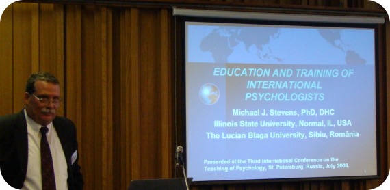

|
|

EDUCATION AND TRAINING OF INTERNATIONAL PSYCHOLOGISTSWhat do psychologists need to engage the world and its pressing challenges in a culturally competent and socially responsible manner? I describe three elements of education and training in international psychology: characteristics of the student (i.e., qualities that predict becoming socially responsible global citizens); a philosophy of education (e.g., foundations in critical consciousness and cultural diversity); and the content and process of education and training (i.e., multicultural, multidisciplinary, and multisectoral exposure that promote sensitivity, knowledge, and competencies). Of overarching importance is the need to advance psychology to a higher level of global relevance through a value-based fusion of the person and the discipline. I emphasize the necessity of preparing psychology students in alternative models, methods, interventions, and standards of practice and provide examples of psychology programs that do so. I also describe how psychology instructors and students can become more involved in international psychology. I review useful resources, including international psychology organizations, publications, government and private grants, information databases, and instructional materials and services. I identify Internet links and readings to assist psychology professors and students in preparing for the fluid, interconnected, and diverse world of the 21st century. Concerning recent efforts to internationalize the psychology curriculum, I advocate a broad, sustained, and systematic effort to conceptualize, develop, and support a model core curriculum of required and elective coursework, supervised field experience, and extracurricular opportunities. These include intra-disciplinary utilization, extra-disciplinary “borrowing,” innovative additions, the infusion of international content, and alternative pedagogies. I also address the need to design and apply methodologies for evaluating the goals and outcomes of an internationalized psychology curriculum. Last, I present a course syllabus on international psychology. The course entails reading, writing, and discussing contemporary topics in this specialty. Students examine mainstream and alternative theoretical, methodological, and applied approaches that are relevant to the study and practice of international psychology. Topics offer a broad and deep appreciation of psychology’s relevance to understanding and solving global problems and how psychology itself is affected by events and cultures around the world. Students develop and demonstrate competencies in the following domains:
Specific topics include the history and scope of international psychology, Western psychology and its limitations, alternative models and methodologies, the indigenization of psychology, psychology in other countries, intergroup conflict and peace-building, societal transformation and national development, the natural environment, physical and mental health worldwide, globalization, terrorism, women, children and adolescents, migrants and refugees, and professional practice. |
© 2008 Victor Karandashev